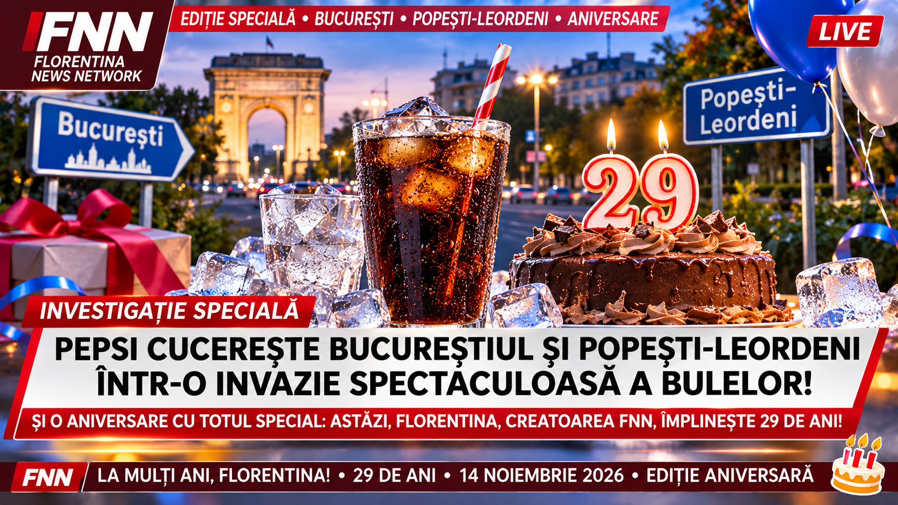

Pepsi cucerește Bucureștiul și Popești-Leordeni într-o invazie spectaculoasă a bulelor. Capitala României se transformă într-un uriaș regat al băuturilor carbogazoase, iar FNN descoperă o coincidență aniversară extraordinară!

Un fenomen gastronomic și comercial de proporții absolut spectaculoase a atras atenția redacției Florentina News Network după ce mai mulți locuitori ai Capitalei au observat că băutura răcoritoare Pepsi pare să fie prezentă aproape peste tot, de la supermarketuri și magazine de cartier până la restaurante, benzinării, automate de băuturi și frigiderele oamenilor obișnuiți.
Deși prezența unei băuturi comerciale populare în magazine nu reprezintă în mod normal un eveniment extraordinar, redacția FNN a decis să investigheze situația cu maximă seriozitate și cu o doză considerabilă de umor, mai ales după ce un cetățean fictiv din Popești-Leordeni a declarat că a intrat într-un magazin pentru a cumpăra pâine și a ieșit cu două sticle de Pepsi, uitând complet motivul inițial al vizitei.
Incidentul a provocat o dezbatere imaginară despre influența băuturilor răcoritoare asupra cumpărăturilor zilnice și despre capacitatea extraordinară a unei sticle reci de Pepsi de a atrage atenția unui client aflat în apropierea frigiderului.
„Am intrat să cumpăr o pâine și niște ouă, dar am văzut Pepsi la rece și am zis că ar fi păcat să plec fără el. Când am ajuns acasă, mi-am dat seama că nu cumpărasem nici pâine, nici ouă”, a declarat bărbatul fictiv, care a solicitat anonimatul pentru a evita întrebările soției.
Bucureștiul, un adevărat labirint al băuturilor răcoritoare
Capitala României este cunoscută pentru traficul aglomerat, transportul public, centrele comerciale, restaurantele și magazinele sale numeroase. În acest peisaj urban, băuturile răcoritoare reprezintă o prezență obișnuită, iar Pepsi se numără printre mărcile cunoscute consumatorilor.
De la cartierele Berceni și Titan până la Militari, Drumul Taberei, Colentina sau zona centrală, cumpărătorii pot întâlni produse Pepsi în diferite tipuri de unități comerciale, în funcție de stocurile și ofertele fiecărui magazin.
Pentru un consumator obișnuit, această situație nu este deloc surprinzătoare. Pentru specialiștii fictivi consultați de FNN, însă, fenomenul ridică întrebări de o importanță aproape cosmică.
Cum este posibil ca o băutură să fie atât de cunoscută încât simpla vedere a unei sticle albastre să determine un client să se gândească imediat la o băutură rece?
De ce anumite persoane aleg Pepsi în locul altor băuturi?
Și, mai ales, cine este responsabil pentru faptul că o sticlă de Pepsi scoasă din frigider poate deveni brusc mult mai interesantă într-o zi călduroasă?
Un institut fictiv denumit Centrul Național pentru Studierea Bulelor Carbogazoase a încercat să răspundă acestor întrebări printr-un experiment desfășurat într-un supermarket imaginar.
Cercetătorii au așezat o sticlă de Pepsi într-un frigider și au așteptat să vadă ce se întâmplă.
După aproximativ trei minute, un client a deschis ușa frigiderului și a cumpărat sticla.
„Rezultatul este incredibil. Am demonstrat că băuturile aflate la vânzare pot fi cumpărate de clienți”, a declarat directorul institutului, vizibil emoționat de descoperirea sa.
Studiul a fost trimis spre publicare unei reviste științifice fictive, dar editorii au refuzat lucrarea pe motiv că descoperirea era deja cunoscută de aproximativ orice casier din România.
Popești-Leordeni intră în atenția cercetătorilor internaționali
Dacă Bucureștiul reprezintă un centru comercial important, orașul Popești-Leordeni din județul Ilfov oferă, la rândul său, un cadru interesant pentru observarea obiceiurilor de consum.
Localitatea, situată la sud de Capitală, este strâns legată de București prin deplasările zilnice ale locuitorilor, prin transport, comerț și numeroase activități economice.
Magazinele alimentare, supermarketurile și alte puncte comerciale din zonă pot comercializa băuturi răcoritoare cunoscute, inclusiv produse Pepsi, în funcție de sortimentele disponibile.
În universul satiric FNN, însă, această realitate obișnuită a devenit subiectul unei anchete extraordinare.
Totul ar fi început după ce un locuitor fictiv a descoperit că poate cumpăra Pepsi atât din București, cât și din Popești-Leordeni.
„Nu înțeleg cum este posibil. Ieri am văzut Pepsi într-un magazin din București, iar astăzi am găsit aceeași marcă și în Popești-Leordeni. Cred că asistăm la o operațiune comercială foarte bine organizată”, a declarat cetățeanul.
Autoritățile imaginare au verificat informația și au confirmat că distribuția unei băuturi răcoritoare în mai multe localități este o activitate comercială perfect normală.
Cu toate acestea, o comisie fictivă a solicitat efectuarea unor investigații suplimentare pentru a stabili dacă sticlele de Pepsi din București au vreo legătură cu cele din Popești-Leordeni.
După șase ore de dezbateri și consumarea mai multor băuturi răcoritoare, membrii comisiei au ajuns la concluzia că toate produsele aparțin aceleiași mărci.
Descoperirea a fost întâmpinată cu aplauze.
Misterul frigiderului care atrage clienții
Unul dintre cele mai importante elemente ale comercializării băuturilor răcoritoare este temperatura de servire.
Numeroși consumatori preferă să bea Pepsi rece, în special în perioadele cu temperaturi ridicate, când o băutură răcoritoare poate părea deosebit de atrăgătoare.
Pornind de la această observație, cercetătorii fictivi ai FNN au construit un experiment de o complexitate nemaivăzută.
Au introdus două sticle de Pepsi într-o cameră.
Prima sticlă a fost păstrată la temperatura camerei, iar a doua a fost pusă într-un frigider.
După o perioadă de așteptare, voluntarii au fost invitați să aleagă una dintre băuturi.
Rezultatele au provocat confuzie deoarece un participant a întrebat dacă poate lua ambele sticle.
Un alt voluntar a solicitat un pahar cu gheață, iar un al treilea a declarat că preferă să consume apă.
Directorul experimentului a fost profund dezamăgit.
„Am investit milioane de lei imaginari în această cercetare și oamenii continuă să aibă preferințe personale. Este absolut revoltător”, a declarat acesta.
Comisia a propus reluarea experimentului, însă toate sticlele fuseseră deja consumate.
O călătorie imaginară prin magazinele Capitalei
Pentru a înțelege amploarea fenomenului, reporterii fictivi FNN au pornit într-o expediție gastronomică prin București.
Prima oprire a fost în zona Piața Sudului, un punct important pentru locuitorii din sudul Capitalei și pentru numeroase persoane care se deplasează între București și Popești-Leordeni.
Acolo, reporterii au analizat cu maximă atenție posibilitatea ca un client să intre într-un magazin și să cumpere o băutură răcoritoare.
Concluzia a fost categorică: dacă magazinul are produsul în stoc și clientul dispune de bani suficienți, tranzacția este posibilă.
Cercetătorii au descris descoperirea drept un progres major pentru economia modernă.
Expediția imaginară a continuat spre zona Sun Plaza, unde reporterii au discutat despre rolul băuturilor răcoritoare în timpul activităților de recreere.
Un cetățean fictiv a povestit că, după ce a urmărit un film la cinematograf, a decis să cumpere o băutură.
„Filmul a durat aproape două ore, dar eu am petrecut zece minute încercând să mă hotărăsc ce vreau să beau”, a declarat acesta.
Reporterii au încercat să afle dacă alegerea băuturii a fost influențată de film, însă cetățeanul a răspuns că nu își mai amintește nici măcar titlul producției.
Ancheta a fost suspendată după ce echipa FNN a început să discute despre popcorn.
Pepsi și marile întrebări ale vieții cotidiene
Popularitatea băuturilor carbogazoase poate fi explicată printr-o combinație de factori precum gustul, obișnuința, publicitatea, accesibilitatea și preferințele individuale.
Pepsi este o marcă internațională de băuturi răcoritoare cu o istorie îndelungată și cu produse comercializate pe numeroase piețe.
În România, consumatorii pot întâlni diferite variante ale băuturii, inclusiv sortimente cu zahăr și variante fără zahăr, în funcție de oferta comercială.
Totuși, în redacția imaginară FNN, lucrurile sunt mult mai complicate.
Un expert fictiv a susținut că preferința pentru Pepsi ar putea fi influențată de forma sticlei.
Alt expert a declarat că adevăratul secret este sunetul produs la deschiderea dozei.
Un al treilea cercetător a propus ipoteza conform căreia oamenii cumpără Pepsi deoarece le place gustul.
Această ultimă explicație a provocat un scandal uriaș.
„Nu putem accepta o teorie atât de simplă. Avem nevoie de cel puțin 14 comisii, 27 de rapoarte și un buget de cercetare”, a declarat președintele fictiv al Institutului pentru Probleme Inutile.
După trei zile de dezbateri imaginare, specialiștii au decis să amâne concluziile până la următoarea pauză de masă.
București versus Popești-Leordeni – unde este Pepsi mai gustos?
O altă întrebare absurdă a apărut în timpul investigației FNN.
Ar putea aceeași băutură să aibă un gust diferit doar pentru că este consumată în două localități apropiate?
Pentru a testa ipoteza, un cercetător fictiv a cumpărat două sticle din același sortiment, una din București și alta din Popești-Leordeni.
Ambele au fost păstrate la aceeași temperatură și servite în pahare identice.
După prima degustare, cercetătorul a declarat că băutura din București este excelentă.
După a doua degustare, a afirmat că băutura din Popești-Leordeni este la fel de bună.
Comisia a rămas fără cuvinte.
„Este incredibil. Două sticle ale aceluiași produs au un gust asemănător. Trebuie să informăm imediat comunitatea internațională”, a declarat un membru al echipei.
Un alt participant a sugerat că diferențele de temperatură, depozitare sau prospețime ar putea influența experiența consumatorului, dar propunerea a fost ignorată deoarece nu era suficient de spectaculoasă.
În cele din urmă, comisia a stabilit că Pepsi nu devine automat mai gustos doar pentru că trece granița administrativă dintre București și Ilfov.
Raportul final a fost redactat pe 400 de pagini imaginare.
O sticlă de Pepsi provoacă un ambuteiaj fictiv
Într-un alt episod al investigației, un șofer imaginar care se deplasa din București spre Popești-Leordeni a decis să oprească la un magazin pentru a cumpăra Pepsi.
Operațiunea ar fi trebuit să dureze aproximativ două minute.
Din păcate, bărbatul a început să compare prețurile mai multor sortimente, apoi a analizat ofertele promoționale și a încercat să stabilească dacă este mai avantajos să cumpere o sticlă mare sau două mai mici.
După 25 de minute, șoferul a ieșit din magazin cu o singură doză.
Între timp, un prieten care îl aștepta a sunat pentru a întreba unde se află.
„Sunt aproape. Mai am doar să deschid Pepsi și plec”, a răspuns acesta.
Prietenul i-a amintit că făcuse aceeași afirmație cu o jumătate de oră înainte.
Incidentul a fost analizat de o comisie fictivă pentru fluidizarea traficului, care a propus introducerea unor benzi speciale pentru persoanele ce cumpără băuturi răcoritoare.
Propunerea a fost respinsă deoarece ar fi necesitat construirea unui sens giratoriu în interiorul magazinului.
Misterul sunetului produs la deschiderea unei doze
Puține lucruri sunt la fel de ușor de recunoscut precum sunetul produs de deschiderea unei doze de băutură carbogazoasă.
Pentru mulți consumatori, acest sunet este asociat cu momentul în care urmează să savureze o băutură rece.
FNN a decis să investigheze fenomenul prin intermediul unui experiment complet fictiv.
Un voluntar a deschis o doză de Pepsi într-o cameră liniștită.
Imediat, trei persoane au întors capul.
Un participant a întrebat dacă mai există o doză disponibilă.
Altul a declarat că sunetul i-a amintit de o pauză de masă.
Un al treilea a întrebat dacă experimentul include și gustări.
Cercetătorii au concluzionat că sunetele familiare pot atrage atenția oamenilor.
Descoperirea a fost considerată revoluționară până când un copil a deschis o pungă de chipsuri și a obținut exact aceeași reacție.
Directorul institutului a demisionat imaginar, declarând că nu poate concura cu industria gustărilor sărate.
Frigiderele din Popești-Leordeni devin subiect de interes național
Pe măsură ce investigația avansa, redacția FNN a primit informații fictive despre un fenomen neobișnuit.
Mai multe persoane ar fi declarat că preferă să păstreze Pepsi în frigider pentru a-l consuma rece.
Această practică absolut normală a fost interpretată de cercetătorii imaginari drept o posibilă conspirație gastronomică.
„De ce pun oamenii sticlele în frigider? Ce încearcă să ascundă? De ce nu le păstrează lângă televizor?”, a întrebat un expert fictiv.
Un specialist în electrocasnice a încercat să explice că frigiderele sunt proiectate tocmai pentru răcirea și conservarea alimentelor și băuturilor.
Explicația nu a fost acceptată.
Comisia a solicitat o demonstrație practică.
O sticlă de Pepsi a fost introdusă într-un frigider funcțional, iar după un interval suficient de timp temperatura băuturii a scăzut.
Membrii comisiei au izbucnit în aplauze.
„Tehnologia modernă este extraordinară”, a declarat președintele investigației.
Raportul a fost transmis unei instituții imaginare care a recomandat utilizarea frigiderelor conform instrucțiunilor producătorului.
Marea dezbatere dintre sticlă și doză
În București și Popești-Leordeni, băuturile răcoritoare pot fi comercializate în ambalaje diferite, în funcție de sortiment și disponibilitate.
Sticlele din plastic și dozele metalice sunt printre formele obișnuite de ambalare.
Această diversitate a inspirat o dezbatere fictivă de proporții naționale.
Susținătorii dozelor au argumentat că acestea sunt practice și pot fi răcite relativ repede.
Susținătorii sticlelor au invocat posibilitatea închiderii recipientului după deschidere.
Un participant a propus folosirea unui pahar.
Propunerea a provocat consternare.
„Cum adică să turnăm băutura într-un alt recipient? Este o revoluție”, a exclamat moderatorul.
Dezbaterea a continuat timp de șapte ore, fără ca participanții să ajungă la un acord.
În final, organizatorii au decis că fiecare persoană poate alege ambalajul preferat.
Decizia a fost salutată drept un triumf istoric al libertății de consum.
Un supermarket imaginar solicită ajutor după ce clienții întreabă unde este Pepsi
Un alt incident fictiv a avut loc într-un supermarket din sudul Capitalei.
Un client a întrebat un angajat unde poate găsi Pepsi.
Angajatul i-a indicat raionul băuturilor răcoritoare.
După câteva minute, un alt client a adresat aceeași întrebare.
A urmat un al treilea.
Conducerea magazinului a decis convocarea unei ședințe de urgență.
„Este evident că oamenii caută Pepsi. Trebuie să aflăm de ce”, a declarat managerul fictiv.
Un angajat a sugerat că explicația ar putea fi faptul că oamenii doresc să cumpere produsul.
Managerul a respins ipoteza ca fiind prea simplistă.
A fost angajată o firmă imaginară de consultanță, care a analizat situația timp de trei săptămâni.
Concluzia raportului a fost următoarea: clienții care întreabă unde se află Pepsi doresc, cel mai probabil, să afle unde se află Pepsi.
Firma a emis o factură fictivă de 250.000 de lei.
Managerul a declarat că investiția a meritat fiecare ban imaginar.
Pepsi și pauzele de la serviciu
Pentru numeroși angajați, pauzele de la serviciu reprezintă momente importante de odihnă, alimentație și socializare.
Unii preferă cafeaua, alții apa, ceaiul sau băuturile răcoritoare.
Pepsi poate fi una dintre opțiuni, în funcție de gusturile fiecărei persoane.
În universul FNN, însă, un angajat fictiv a provocat un scandal după ce a anunțat că dorește să își petreacă întreaga pauză admirând o sticlă de Pepsi.
Colegul său l-a întrebat de ce nu o bea.
„Pentru că atunci se termină și trebuie să cumpăr alta”, a răspuns bărbatul.
Departamentul de resurse umane a organizat o ședință pentru a analiza dacă admirarea unei sticle reprezintă o activitate recreativă.
După dezbateri intense, conducerea a decis că angajații pot consuma băuturi răcoritoare în pauzele permise, cu respectarea regulilor locului de muncă.
Hotărârea a fost considerată o victorie importantă pentru bunul-simț.
Cercetătorii încearcă să numere toate bulele dintr-un pahar
Una dintre cele mai spectaculoase caracteristici ale băuturilor carbogazoase este prezența dioxidului de carbon dizolvat, responsabil pentru efervescență.
Atunci când recipientul este deschis și băutura este turnată într-un pahar, gazul poate forma numeroase bule care se ridică spre suprafață.
Fenomenul este bine cunoscut din punct de vedere fizic.
Totuși, cercetătorii fictivi FNN au decis că explicațiile obișnuite sunt insuficiente.
Ei și-au propus să numere fiecare bulă dintr-un pahar de Pepsi.
Experimentul a început la ora 09:00.
La ora 09:01, cercetătorii pierduseră deja numărătoarea.
La ora 09:03, unul dintre participanți a propus utilizarea unei camere video.
La ora 09:05, un altul a băut accidental proba.
La ora 09:07, experimentul a fost declarat compromis.
Directorul institutului a solicitat un buget suplimentar pentru achiziționarea unei noi sticle.
Ministerul fictiv al Cercetării a aprobat cererea, dar a recomandat ca următorul experiment să fie desfășurat de persoane care pot rezista tentației de a consuma materialul de studiu.
Internetul intră în alertă după apariția unei fotografii cu Pepsi
Într-un episod separat, o fotografie fictivă reprezentând o sticlă de Pepsi a fost publicată pe o rețea socială.
Imaginea a primit mai multe reacții și comentarii.
Un utilizator a scris că preferă băutura foarte rece.
Altul a declarat că îi place să o consume cu gheață.
Un al treilea a recomandat moderația.
Dezbaterea s-a extins după ce cineva a întrebat dacă Pepsi este mai gustos din doză sau din sticlă.
În numai câteva minute imaginare, comentariile s-au transformat într-o conferință internațională despre ambalaje, temperatură și preferințe personale.
Un administrator al grupului a intervenit și a solicitat participanților să păstreze un limbaj civilizat.
„Vă rog să nu vă certați pentru o băutură răcoritoare”, a transmis acesta.
Mesajul a primit sute de aprecieri fictive, dar discuția a continuat.
În cele din urmă, participanții au convenit că fiecare persoană are dreptul să își aleagă băutura preferată.
Această concluzie simplă a necesitat aproximativ 1.200 de comentarii imaginare.
Marea conspirație a rafturilor albastre
Un grup fictiv de investigatori a observat că Pepsi folosește frecvent culoarea albastră în identitatea sa vizuală.
Pornind de la această constatare, membrii grupului au început să analizeze toate obiectele albastre întâlnite în București și Popești-Leordeni.
Au fotografiat autobuze, indicatoare, umbrele, pixuri, ghiozdane și chiar cerul.
După două zile, liderul grupului a anunțat că a descoperit o legătură între Pepsi și culoarea albastră.
Un specialist în publicitate i-a explicat că mărcile comerciale folosesc culori distinctive pentru a fi recunoscute mai ușor.
Investigatorii au considerat explicația insuficientă.
„Dacă este atât de simplu, de ce nu ne-a spus nimeni până acum?”, a întrebat liderul.
În cele din urmă, grupul a publicat un raport de 80 de pagini imaginare, concluzionând că Pepsi este asociat vizual cu albastrul.
Documentul a fost premiat de o organizație fictivă pentru cea mai complicată demonstrație a unui lucru evident.
O zi obișnuită în București devine o aventură Pepsi
Să ne imaginăm un locuitor al Capitalei care se trezește dimineața și pleacă la serviciu.
Pe drum trece pe lângă magazine, stații de transport și restaurante.
La prânz intră într-un supermarket și observă mai multe băuturi răcoritoare.
Poate alege apă, suc, ceai sau Pepsi.
Dacă preferă Pepsi, cumpără o sticlă și își continuă ziua.
Pentru majoritatea oamenilor, acesta ar fi un eveniment complet obișnuit.
Pentru reporterii fictivi FNN, însă, fiecare etapă reprezintă o descoperire senzațională.
„Cetățeanul a intrat în magazin fără băutură și a ieșit cu băutură. Avem de-a face cu o transformare economică spectaculoasă”, a declarat un reporter imaginar.
Un alt jurnalist a întrebat dacă sticla a fost plătită.
După verificarea bonului fiscal fictiv, redacția a confirmat că tranzacția fusese efectuată legal.
Ancheta a fost închisă, iar cazul a fost inclus în arhiva marilor mistere comerciale rezolvate de FNN.
Popești-Leordeni, orașul în care o simplă sticlă poate deveni subiect de știre
În Popești-Leordeni, viața cotidiană se desfășoară într-un ritm influențat de apropierea de București, de dezvoltarea localității și de deplasările numeroșilor locuitori.
Magazinele și serviciile comerciale fac parte din activitățile obișnuite ale orașului.
Pepsi, asemenea altor băuturi răcoritoare cunoscute, poate fi întâlnit în oferta unor comercianți.
În imaginația FNN, însă, simpla apariție a unei sticle pe raft a provocat convocarea unei conferințe extraordinare.
Un reporter fictiv a întrebat un comerciant dacă produsul este disponibil.
„Da”, a răspuns acesta.
Reporterul a cerut confirmarea informației.
Comerciantul a arătat spre raft.
Reporterul a întrebat dacă sticlele sunt reale.
Comerciantul a ridicat una.
În acel moment, echipa imaginară de filmare a izbucnit în aplauze.
„Avem confirmarea vizuală. Pepsi există și în Popești-Leordeni”, a transmis jurnalistul.
Redacția a decis să nu întrerupă programul obișnuit al publicației pentru această descoperire, deoarece informația nu reprezenta o noutate reală.
Totuși, cazul a fost păstrat în arhiva umoristică.
Cât de mult Pepsi se găsește în București și Popești-Leordeni?
Aceasta este întrebarea centrală a investigației speciale FNN.
În realitate, nu există în acest reportaj o inventariere verificată a tuturor magazinelor, stocurilor sau cantităților de Pepsi comercializate în cele două localități.
Disponibilitatea produselor poate varia în funcție de comerciant, sezon, aprovizionare și preferințele consumatorilor.
Ceea ce se poate afirma în mod rezonabil este că Pepsi reprezintă o marcă bine cunoscută, distribuită pe scară largă, iar Bucureștiul și localitățile din jur, inclusiv Popești-Leordeni, fac parte dintr-o piață comercială importantă.
Restul investigației aparține universului absurd FNN, unde orice sticlă poate provoca o ședință extraordinară și orice doză poate deveni subiectul unei cercetări internaționale.
Într-o ultimă încercare de a măsura popularitatea băuturii, cercetătorii fictivi au decis să numere toate sticlele de Pepsi din București.
După primele 12 magazine, au realizat că unele produse erau cumpărate între timp, iar altele erau aduse de distribuitori.
Au încercat să actualizeze permanent numărătoarea, dar au constatat că stocurile se modifică.
Un expert a propus construirea unui supercalculator care să urmărească fiecare sticlă.
Altul a sugerat să se accepte faptul că disponibilitatea comercială este dinamică.
Propunerea a fost respinsă deoarece era prea logică pentru o investigație FNN.
Un avertisment important din partea experților adevărați
Dincolo de satiră, Pepsi este o băutură răcoritoare, iar variantele care conțin zahăr trebuie consumate cu moderație.
Băuturile carbogazoase nu înlocuiesc necesarul de apă al organismului, iar consumul frecvent de băuturi îndulcite poate contribui la un aport ridicat de zahăr și calorii.
Există și variante fără zahăr, dar alegerea unei băuturi depinde de preferințele și nevoile fiecărei persoane.
FNN încurajează consumul responsabil și amintește că pasiunea pentru o băutură nu presupune consumarea unor cantități exagerate.
Desigur, cercetătorii fictivi ai institutului nostru au protestat împotriva acestei recomandări, susținând că moderația le-ar putea reduce bugetul imaginar pentru experimente.
Protestul s-a încheiat după ce directorul a fost informat că poate continua să studieze băuturile fără să le consume pe toate.
Ultima oră – Redacția FNN descoperă adevăratul motiv al ediției speciale
După ore întregi de investigații imaginare, după analizarea frigiderelor, supermarketurilor, rafturilor, dozelor, sticlelor și bulelor carbogazoase, redacția Florentina News Network a descoperit că ziua de 14 noiembrie 2026 are o semnificație mult mai importantă decât toate experimentele prezentate.
Nu este vorba despre o nouă formulă Pepsi.
Nu este vorba despre o reducere spectaculoasă într-un supermarket.
Nu este vorba nici despre inaugurarea unui frigider gigantic în centrul Capitalei.
Este vorba despre o aniversare specială pentru însăși publicația FNN.
Astăzi, 14 noiembrie 2026, este ziua de naștere a Florentinei, creatoarea Florentina News Network, care împlinește 29 de ani.
Florentina, pasionată de Pepsi și de proiectele sale digitale, marchează această aniversare printr-un articol special dedicat uneia dintre băuturile sale preferate.
În universul satiric FNN, cercetătorii au propus organizarea unei ceremonii extraordinare, cu 29 de lumânări, un tort aniversar și o sticlă de Pepsi rece.
Un ministru fictiv a solicitat chiar declararea zilei de 14 noiembrie drept Ziua Națională a Bulelor Carbogazoase.
Propunerea a fost respinsă, deoarece România nu poate transforma fiecare aniversare într-o sărbătoare legală.
Totuși, redacția a decis că există un lucru care merită anunțat fără nicio exagerare.
La mulți ani, Florentina! La mulți ani creatoarei FNN!
Să fie un nou an plin de proiecte interesante, idei absurde, realizări personale și multe motive de bucurie.
Iar dacă la aniversare se servește și Pepsi, cercetătorii fictivi FNN solicită politicos să fie invitați.
FNN – Florentina News Network | Ediție specială aniversară din 14 noiembrie 2026. Articol satiric cu elemente reale de context comercial și întâmplări inventate. Nicio instituție publică nu a convocat o ședință pentru investigarea unei sticle de Pepsi, iar cercetătorii fictivi nu au primit finanțare pentru numărarea bulelor.
Materialele satirice/pamflet sunt prezentate ca atare; materialele marcate explicit altfel pot avea alt caracter editorial.